Virtual Network & NFV Membangun topologi jaringan virtual yang utuh — dari Physical Edge hingga service chain vNGAF, Traffic Mirroring, dan Network Insight.
Modul belajar interaktif dari 37 slide training resmi Sangfor HCI 6.9.1: memahami cara platform memvirtualisasikan jaringan fisik menjadi aNet, mengonfigurasi Physical Edge, port group VLAN, distributed virtual switch, dan virtual router, lalu men-deploy perangkat NFV (vNGAF, vIAM, vADC) serta memantau trafik dengan Traffic Mirroring dan Network Insight.
Target modul: setelah menyelesaikan modul ini, Anda mampu merancang topologi virtual network yang dapat dijangkau jaringan fisik, menentukan titik masuk-keluar trafik pada setiap node, menempatkan NFV secara benar, serta mengoperasikan mirroring dan flow analytics untuk audit, keamanan, dan troubleshooting.
Overlay Fabric
VXLAN · VNI 5001
Underlay MTU 1600 byte
Flow Analytics
Network Insight · 30 hari
Sampling 100% tanpa packet loss
Lima kompetensi jaringan virtual yang akan Anda kuasai.
Modul ini membentuk pemahaman berlapis: dari cara platform memetakan jaringan fisik ke dalam HCI, konfigurasi komponen L2/L3, hingga penempatan perangkat keamanan dan alat observabilitas trafik.
Memahami arsitektur dan nilai aNet. Menjelaskan bagaimana virtual network Sangfor HCI menyusun topologi dari VM dan perangkat virtual, lalu menjembatani trafik ke port fisik melalui Physical Edge tanpa mengubah desain jaringan fisik secara masif.
Mengonfigurasi Physical Edge dan port group. Memilih NIC uplink pada setiap node, membuat port group Trunk untuk VLAN tertentu, menetapkan PVID, serta mendiagnosis VM yang tidak dapat keluar ke jaringan produksi.
Mengelola distributed virtual switch dan virtual router. Memahami batas 1024 port per vSwitch, mekanisme VXLAN antar-node, ACL berbasis IP/port, broadcast storm control, serta routing L3, VLAN sub-interface, SNAT/DNAT, DHCP, dan DNS proxy pada vRouter.
Men-deploy dan me-license perangkat NFV. Mengimpor template vma, menarik vNGAF ke topologi, mengatur NIC/HA/datastore, membaca lisensi dan resource yang hanya dapat dinaikkan, lalu membuka Web Console perangkat.
Mengoperasikan Traffic Mirroring dan Network Insight. Membuat kebijakan mirror multi-source ke satu tujuan, menghindari loop VLAN pada edge, men-deploy virtual machine aNI, memilih sizing Small/Medium/Large, dan membaca peta akses 30 hari untuk audit serta troubleshooting.
Lima bagian modul Virtual Network & NFV.
Materi disusun mengikuti alur deck: konsep dan lisensi, komponen jaringan virtual, perangkat NFV, mirroring trafik, lalu analitik aliran akses. Penomoran bagian dirapikan; deck asli memberi label “Part 5” dua kali pada bab Mirroring dan Network Insight.
Fondasi Virtual Network
Slide 3–7 · Definisi network virtualization, nilai operasional aNet, komponen logis, kebutuhan lisensi aNET/NFV, dan contoh topologi produksi.
Buka pembahasanKomponen L2 & L3
Slide 8–17 · Physical Edge, port group VLAN, distributed virtual switch, VXLAN, batas port, virtual router, sub-interface, NAT, dan ACL.
Buka komponenVirtual Network Device
Slide 18–27 · Fungsi NFV, unduh dan impor template vma, drag & drop vNGAF, lisensi resource, Web Console, serta service chain inline.
Buka NFVTraffic Mirroring
Slide 28–32 · Skenario audit, O&M, dan security analysis; port mirroring multi-source; sampling rate; peringatan loop VLAN pada edge.
Buka mirroringNetwork Insight
Slide 33–37 · Flow visual 30 hari, peta akses antar-VM dan antar-area, port terbuka, micro-isolation, deployment aNI, dan sizing VM.
Buka insightLima fase membangun jaringan virtual yang siap produksi.
Urutan ini mencerminkan dependensi teknis: tanpa edge yang benar, VM tidak dapat keluar; tanpa vSwitch dan vRouter, segmentasi serta routing tidak terbentuk; tanpa NFV, trafik tidak melewati kontrol keamanan.
Desain & Lisensi
Pastikan lisensi aNET/NFV aktif, petakan VLAN, dan tentukan node serta NIC uplink untuk setiap Physical Edge.
Slide 3–7Bangun Edge
Pilih interface fisik pada semua node, buat Port Group Trunk, dan tetapkan VLAN yang boleh lewat.
Slide 10–12Segmentasi & Routing
Hubungkan VM ke distributed vSwitch, aktifkan VXLAN, lalu bangun vRouter, sub-interface VLAN, dan NAT.
Slide 13–17NFV Inline
Impor template, tarik vNGAF/vIAM/vADC, atur NIC dan HA, terapkan lisensi, lalu uji jalur trafik.
Slide 18–27Observasi Trafik
Aktifkan mirroring dengan VLAN yang selaras dan deploy aNI untuk membaca flow, port terbuka, serta anomali akses.
Slide 28–37Prinsip operasional: virtual network adalah peta logis, bukan pengganti konfigurasi fisik. Semua jalur tetap bermuara pada NIC fisik dan switch uplink. Kesalahan paling umum bukan pada topologi logis, melainkan pada NIC edge yang tidak dipilih di salah satu node, VLAN yang tidak konsisten, atau port switch fisik yang belum di-isolate saat mirroring.
Fondasi Virtual Network & aNet
Definisi network virtualization, nilai operasional, komponen logis, persyaratan lisensi, dan contoh topologi produksi pada platform Sangfor HCI.
Jaringan fisik dipetakan menjadi topologi virtual yang utuh.
Slide 4 mendefinisikan network virtualization sebagai penyebaran topologi jaringan menggunakan virtual machine dan virtual network device di dalam platform HCI, lalu dijembatani ke port jaringan fisik HCI untuk membentuk komunikasi Local Area Network.
Definisi & Model Mental aNet
Seluruh node dalam cluster menyumbangkan resource untuk membentuk satu virtual network. Administrator menggambar topologi secara visual — you draw what you get — dan platform menerjemahkannya menjadi jalur forwarding nyata di atas fabric HCI.
Batas konkurensi: hanya satu administrator yang dapat mengedit virtual network pada waktu yang sama. Koordinasikan perubahan topologi agar dua orang tidak menimpa Apply Changes secara bersamaan.
Enam Karakteristik yang Wajib Dipahami
Pernyataan berikut tampak sederhana, tetapi menjadi dasar seluruh keputusan desain dan troubleshooting di bagian selanjutnya.
- Physical network divirtualisasikan ke dalam Sangfor HCI; representasi logis tidak menghapus kebutuhan kabel, VLAN, dan uplink fisik.
- Semua node cluster menyumbang resource untuk membentuk virtual network; kapasitas dan jalur tidak terikat pada satu host saja.
- Memberi gambaran topologi jaringan VM secara menyeluruh, termasuk perangkat yang dilewati trafik.
- You draw what you get — objek yang tampak di kanvas adalah objek yang benar-benar memproses paket.
- Desain dan manajemen mudah karena perubahan dilakukan dari satu konsol, bukan konfigurasi per-switch fisik.
- Satu editor pada satu waktu; ini konsekuensi dari model topologi terpusat yang harus konsisten.
Mengapa aNet dipakai, bukan sekadar VLAN biasa?
Nilai bisnis menurut Slide 5: aNet mempercepat penyebaran sistem aplikasi, menyederhanakan penyesuaian jaringan, mempermudah troubleshooting, meningkatkan kesiapan jaringan, mempersingkat waktu ekspansi, dan menurunkan biaya konstruksi jaringan fisik data center.
Fitur virtual network hanya aktif dengan lisensi aNET dan NFV.
Slide 6 menegaskan syarat awal: authorized aNET, NFV license. Tanpa lisensi yang sesuai, objek topologi dapat terlihat tetapi fitur tidak akan berfungsi penuh.
Membaca Halaman Lisensi Platform
Halaman Hyper-Converged Infrastructure menampilkan status lisensi per komponen. Perhatikan komponen Network Virtualization (aNET) dan Storage Virtualization (aSAN), lalu komponen keamanan di bawahnya.
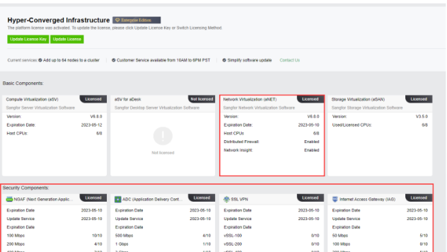
Jangan menebak dari tampilan: tombol Update License Key dan status Licensed / Not licensed adalah sumber kebenaran. Catat tanggal kedaluwarsa sebelum melakukan perubahan topologi produksi.
Komponen Lisensi yang Relevan
Komponen berikut muncul pada halaman lisensi dan menentukan fitur mana yang boleh dipakai dalam desain virtual network.
| Komponen | Peran dalam topologi | Catatan lisensi |
|---|---|---|
| aNET | Network Virtualization: edge, vSwitch, vRouter, topologi | Wajib; pada slide juga menampilkan Distributed Firewall: Enabled dan Network Insight: Enabled |
| aNGAF | Next-Generation Application Firewall virtual | Lisensi throughput dan fitur keamanan terpisah |
| aADC | Application Delivery Controller: load balancing | Kapasitas trafik dan jumlah instance mengikuti lisensi |
| vSSL VPN | Akses remote aman ke aplikasi internal | Jumlah user dan bandwidth terbatas |
| aIAG | Internet Access Gateway: kontrol akses internet | Lisensi per kapasitas dan fitur |
| aNI | Network Insight: flow analytics & audit akses | Membutuhkan VM aNI dan lisensi Network Insight |
Praktik lapangan: cocokkan lisensi dengan jumlah host CPU, throughput NFV, dan jumlah VM yang akan dianalisis. Lisensi yang kurang tidak selalu memblokir deployment, tetapi dapat membatasi fitur atau kapasitas secara diam-diam.
Contoh topologi produksi pada Slide 7.
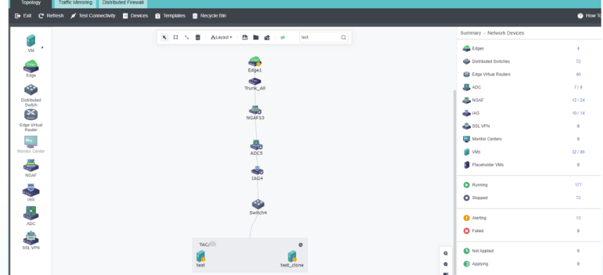
Cara membaca topologi contoh: trafik dari VM menuju dunia luar melewati vSwitch, lalu perangkat NFV secara berurutan (NGAF → ADC → IAG), kemudian edge, baru keluar ke uplink fisik. Urutan ini menentukan siapa yang melihat paket lebih dulu dan di mana kebijakan harus dipasang.
Komponen Virtual Network: Edge, Switch & Router
Physical Edge sebagai jembatan ke dunia fisik, distributed virtual switch untuk Layer 2 dan VXLAN, serta virtual router untuk routing Layer 3, NAT, dan ACL.
Titik temu trafik fisik dan virtual yang wajib ada di setiap node.
Slide 10–12 membahas komponen paling kritis dalam topologi: Physical Edge. Kesalahan pada komponen ini menyebabkan VM hidup tetapi tidak dapat berkomunikasi ke luar cluster.
Definisi & Perilaku Edge
Physical Edge bekerja seperti bridge antara physical network dan virtual network. Trafik antar-keduanya diformulasikan dan diteruskan di sini. Secara default edge menggunakan Trunk_All untuk meneruskan trafik; penambahan Port Group memungkinkan VLAN tertentu lewat secara spesifik.
- Setiap Physical Edge wajib menyertakan network interface pada setiap physical node. Jika satu node tidak dipilih, VM yang berjalan di node tersebut tidak dapat keluar melalui edge.
- Trunk_All meneruskan semua VLAN; gunakan port group untuk membatasi VLAN yang benar-benar dibutuhkan.
- Konsistensi uplink: bila dua node memakai ETH3 untuk production network, ETH3 pada kedua node harus dipilih di Physical Edge.
Simulasi risiko: Node C tetap dapat menjalankan VM, tetapi VM di Node C tidak memiliki jalur keluar melalui edge. Gejalanya mirip kegagalan routing, padahal akarnya adalah keanggotaan interface.
Mengonfigurasi Physical Edge
Jalur konfigurasi: Networking → pilih objek Edge pada panel kiri → pilih Physical Interface → centang interface yang akan dipakai → Apply Changes.
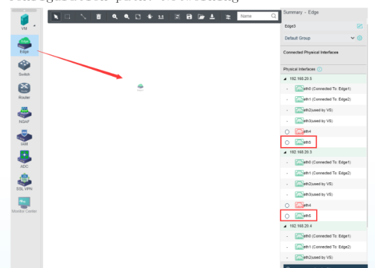
- Buka Networking: masuk ke kanvas topologi, lalu pilih ikon Edge di panel perangkat.
- Pilih interface: pada tab Physical Interface, centang NIC yang terhubung ke switch produksi. Interface yang sudah dipakai vSwitch akan menampilkan status
Used by VS. - Terapkan: klik
Apply Changes; perubahan topologi belum aktif sebelum langkah ini.
Membuat Port Group Trunk
Port group memberi kontrol lebih halus daripada Trunk_All. Pada slide, dibuat port group vlan 100 dengan tipe Trunk (Multiple VLANs), VLAN ID 100, dan PVID 1.
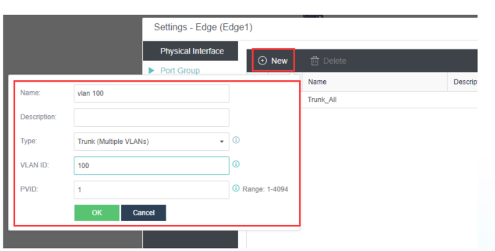
Membaca Field Port Group
| Field | Nilai pada slide | Arti & risikonya |
|---|---|---|
| Name | vlan 100 | Label operasional; gunakan nama yang mencerminkan fungsi, bukan hanya angka VLAN. |
| Description | Kosong | Disarankan diisi untuk jejak perubahan dan audit konfigurasi. |
| Type | Trunk (Multiple VLANs) | Membawa banyak VLAN; pilihan lain adalah access/single VLAN bila hanya satu segmen. |
| VLAN ID | 100 | VLAN yang diizinkan lewat. Harus sama dengan VLAN di port switch fisik. |
| PVID | 1 | Port VLAN ID untuk trafik untagged; rentang 1–4094. PVID yang salah membuat paket masuk ke segmen yang keliru. |
Jebakan paling sering: port group dibuat di satu edge, tetapi interface fisik pada node lain tidak dimasukkan ke edge yang sama. Hasilnya, migrasi VM ke node tersebut memutus konektivitas tanpa perubahan konfigurasi VM.
Layer 2 terdistribusi dengan batas 1024 port per switch.
Slide 13–14 menjelaskan distributed virtual switch: satu objek logis yang melayani VM di banyak node, menggunakan VXLAN untuk meneruskan trafik antar-host.
Definisi & Kapabilitas
Virtual switch memungkinkan VM yang terhubung melakukan komunikasi Layer 2. Switch bersifat distributed: VM di node berbeda dapat berada pada switch logis yang sama, dan trafik diteruskan melalui overlay interface.
- Maksimal 1024 port per virtual switch — batas keras yang harus dihitung saat merencanakan kepadatan VM.
- ACL berbasis IP dan port untuk membatasi lalu lintas east-west tanpa harus memaksa trafik keluar ke perangkat fisik.
- Broadcast storm prevention untuk melindungi fabric dari banjir broadcast akibat loop atau misconfiguration.
- Overlay VXLAN membuat topologi L2 melampaui batas satu host tanpa merombak VLAN fisik di setiap rack.
Mengonfigurasi Virtual Switch
Pada kanvas topologi, pilih Switch di panel kiri lalu hubungkan VM ke switch. Contoh slide memperlihatkan Server Switch dengan dua port terhubung ke Web Server A dan Web Server B.
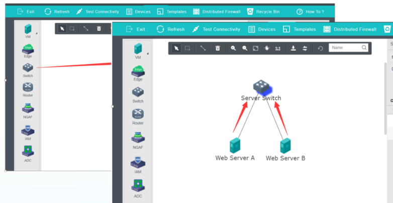
Aturan desain: pisahkan switch berdasarkan fungsi dan tingkat risiko (web, app, database, manajemen). Ini mengurangi luas blast radius dan memudahkan penulisan ACL, sekaligus menghindari satu switch menyentuh batas 1024 port.
Routing Layer 3, NAT, dan ACL yang dikonfigurasi manual.
Slide 15–17 membahas virtual router. Berbeda dari vSwitch yang terdistribusi, vRouter berjalan sebagai instance dengan HA, bukan bentuk terdistribusi.
Kemampuan Virtual Router
Virtual router meneruskan trafik Layer 3. Administrator harus mengonfigurasi jumlah interface, alamat IP interface, dan static route secara manual.
- IPv6 didukung sejak versi 6.1.0, sehingga desain dual-stack dapat dilakukan tanpa perangkat tambahan.
- VLAN sub-interface memungkinkan satu interface fisik/logis melayani banyak segmen VLAN.
- Advanced ACL berbasis interface, IP, dan tipe service.
- SNAT, DNAT, DHCP, dan DNS Proxy tersedia untuk kebutuhan translasi dan layanan dasar.
- Bukan distributed, tetapi HA tersedia; penempatan dan failover harus direncanakan.
Karena tidak terdistribusi: trafik east-west yang harus melewati vRouter akan keluar dari jalur host dan kembali lagi. Tempatkan vRouter pada titik yang memang membutuhkan routing, bukan sebagai pengganti vSwitch untuk komunikasi antar-VM dalam subnet yang sama.
Mengonfigurasi Virtual Router
Klik objek Router pada kanvas, buka Settings, lalu pilih kategori konfigurasi di panel kiri: Interface, Static Route, NAT, Policy-based, Access Control, DHCP, DNS, dan Advanced.
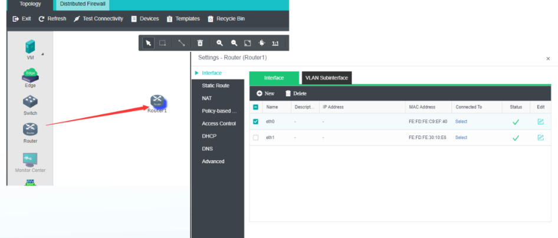
| Menu | Fungsi utama |
|---|---|
| Interface | Menetapkan IP address, MAC, dan interface yang terhubung. |
| VLAN Sub-interface | Membuat sub-interface per VLAN pada satu interface induk. |
| Static Route | Menentukan next-hop untuk subnet yang tidak terhubung langsung. |
| NAT | SNAT untuk keluar ke internet, DNAT untuk publikasi layanan. |
| Access Control | ACL berbasis interface, IP, dan service. |
| DHCP / DNS | Layanan alamat otomatis dan proxy resolusi nama. |
Hitung kepadatan port, beban uplink, dan kebutuhan NFV.
Gunakan slider untuk memproyeksikan apakah desain virtual network masih berada dalam batas vSwitch, uplink fisik, dan kapasitas NFV sebelum diterapkan ke produksi.
Parameter Topologi
Asumsi: satu vNGAF baseline 8 vCPU / 16 GB, empat interface, HA aktif. Overhead mirroring dihitung sebagai replikasi trafik sumber menuju mirror target pada jalur yang sama.
Port yang dipakai VM ditambah interface edge dan router pada satu host. Bandingkan dengan batas 1024 port per virtual switch.
Desain seimbang: kepadatan port masih jauh di bawah 1024, uplink memiliki headroom, dan jumlah NFV sesuai jumlah host untuk penempatan HA.
uplink% = (VM × Mbps × (1 + mirror%)) ÷ uplink
Batas vSwitch = 1024 port · MTU VXLAN = 1600
Cara memakai hasil simulasi: angka ini adalah estimasi perencanaan, bukan kapasitas terjamin. Trafik nyata bergantung pada pola aplikasi, rasio east-west, jumlah broadcast domain, dan perilaku NFV. Gunakan hasilnya untuk menetapkan anggaran headroom, lalu validasi dengan monitoring setelah implementasi.
Eksplorasi konfigurasi Edge, Port Group, Switch, Router & NFV.
Pilih tab untuk melihat urutan langkah dan field penting pada setiap komponen. Navigasi keyboard: panah kiri/kanan, Home, dan End.
Menyiapkan Physical Edge yang Konsisten
Edge adalah satu-satunya jalur antara virtual network dan physical network. Lakukan langkah berikut pada setiap edge yang melayani segmen produksi.
- Petakan NIC: catat port switch fisik dan VLAN yang tersedia di setiap node. Jangan berasumsi nama interface identik secara fungsional.
- Buka Networking → Edge → Physical Interface: centang interface uplink pada semua node yang menjadi anggota cluster.
- Tambahkan Port Group bila tidak ingin memakai
Trunk_All. Tentukan Type, VLAN ID, dan PVID. - Apply Changes: konfirmasi perubahan topologi. Uji dengan ping dari VM di setiap node, bukan hanya satu node.
Uji per node: live migration dapat memindahkan VM ke node yang belum memiliki uplink edge. Pastikan pengujian konektivitas dilakukan dari VM di setiap node, atau matikan sementara penempatan otomatis saat validasi.
Membuat Port Group untuk VLAN Spesifik
Gunakan port group ketika edge tidak boleh meneruskan seluruh VLAN. Ini praktik yang lebih aman dibanding membiarkan Trunk_All tanpa batas.
| Langkah | Aksi | Verifikasi |
|---|---|---|
| 1 | Pilih Edge → Port Group → New | Dialog New Port Group muncul |
| 2 | Isi Name, Type Trunk (Multiple VLANs) | Tipe sesuai kebutuhan multi-VLAN |
| 3 | Isi VLAN ID dan PVID | VLAN ID sama dengan konfigurasi switch fisik |
| 4 | Klik OK, lalu Apply Changes | Port group tampil pada daftar edge |
| 5 | Uji dari VM pada VLAN tersebut | Gateway dan host fisik terjangkau |
PVID bukan VLAN ID. PVID menandai trafik untagged yang masuk; VLAN ID menentukan VLAN yang diizinkan pada trunk. Keduanya harus selaras dengan desain switch fisik.
Menghubungkan VM ke Distributed Switch
Satu switch logis dapat melayani VM di banyak host. Perencanaannya harus mempertimbangkan jumlah port, segmentasi, dan kebutuhan ACL.
- Buat switch: tarik objek Switch ke kanvas, beri nama sesuai fungsi (mis.
Server Switch). - Hubungkan VM: tarik koneksi dari switch ke vNIC VM. Setiap koneksi mengonsumsi satu port dari batas 1024.
- Aktifkan proteksi: terapkan broadcast storm prevention dan ACL IP/port bila segmen berisi banyak VM.
- Hitung kapasitas: gunakan simulator di atas; jika mendekati 1024 port, pecah switch berdasarkan fungsi.
VXLAN di balik layar: VM di node A dan B tampak satu switch, tetapi paket dienkapsulasi dan dikirim melalui underlay. Pastikan MTU underlay cukup (umumnya 1600 byte) agar paket besar tidak terfragmentasi.
Urutan Membangun Virtual Router
vRouter tidak terdistribusi, sehingga setiap perubahan interface dan route berdampak pada satu instance. Bangun secara berurutan agar mudah diuji.
Tambahkan interface, tetapkan IP dan subnet, lalu hubungkan ke switch yang tepat.
Buat VLAN sub-interface bila satu jalur membawa beberapa VLAN.
Tentukan next-hop ke jaringan fisik, internet gateway, atau segmen lain.
Aktifkan SNAT/DNAT hanya untuk alur yang membutuhkan; batasi akses dengan ACL.
Opsional: layanan alamat dan proxy DNS untuk segmen internal.
Konfigurasikan HA bila vRouter menjadi jalur tunggal bagi layanan kritis.
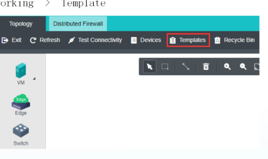
Mengimpor Template Sebelum Menarik Perangkat
Perangkat NFV tidak dibuat dari ISO kosong, melainkan dari template resmi berformat vma. Unduh versi yang sesuai dengan platform HCI Anda, lalu unggah ke datastore.
- Unduh template: akses portal Sangfor Community → Self Services → Download → aCloud(HCI) → NFV, pilih versi yang kompatibel.
- Buka Templates: pada kanvas Networking, klik
Templates, laluUpload. - Pilih file vma dan datastore: pastikan datastore memiliki ruang cukup dan dapat diakses semua node.
- Tunggu unggahan selesai: template harus berstatus tersedia sebelum bisa ditarik ke topologi.
Kompatibilitas: template memiliki keterangan platform dan versi HCI. Menggunakan template yang salah dapat menyebabkan perangkat gagal boot atau fitur tidak aktif meskipun lisensi benar.
Virtual Network Device (NFV)
Menjalankan fungsi keamanan dan optimasi aplikasi Sangfor sebagai perangkat virtual yang dapat ditarik langsung ke topologi: vNGAF, vIAM, vADC, dan vWOC.
Perangkat keamanan dan aplikasi yang hidup di dalam topologi.
Slide 19–20 menjelaskan konsep Network Functions Virtualization: produk Sangfor divirtualisasikan, kompatibel penuh dengan HCI, dan dapat ditambahkan ke virtual network dengan drag & drop.
Tiga Prinsip NFV Sangfor
NFV bukan sekadar VM biasa. Perangkat ini memiliki image, lisensi, dan profil resource khusus yang dikelola platform sebagai bagian dari topologi jaringan.
- 100% compatible: produk Sangfor yang divirtualisasikan dapat berjalan di HCI tanpa perubahan arsitektur aplikasi.
- Drag & drop: perangkat ditarik dari panel NFV ke kanvas, lalu dihubungkan seperti switch atau router.
- Alokasi hardware hanya dapat dinaikkan: resource NFV dapat ditambah, tetapi tidak dapat diturunkan setelah dibuat. Ukuran awal harus direncanakan dengan benar.
Konsekuensi operasional: jika vNGAF dibuat dengan 4 vCPU lalu beban produksi membutuhkan 16 vCPU, Anda dapat menaikkannya. Namun jika sejak awal diberi 32 vCPU untuk lab, resource tersebut tidak bisa dikembalikan ke pool. Sizing yang disiplin lebih penting daripada sekadar “memberi ruang lebih”.
Empat Keluarga Fungsi NFV
vNGAF
Next-Gen Application Firewall- Web Application Firewall
- Vulnerability protection
- Real-time scanner
- Visualization analysis
vIAM
Internet Access Management- Bandwidth management
- URL filtering & app control
- User authentication
- Internet traffic reporting
vADC
Application Delivery Controller- Server load balancing
- Link load balancing
- SSL offloading
- Application optimization
vWOC
WAN Optimization Controller- Application acceleration
- Flow reduction
- Acceleration VPN
- DR optimization
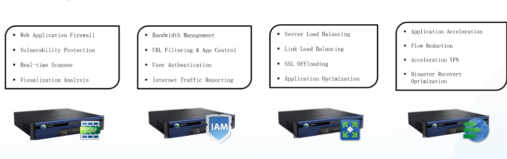
Dari portal komunitas ke datastore HCI.
Slide 21–23 menunjukkan tiga langkah persiapan: mengunduh template, membuka menu Templates, lalu mengunggah file vma ke datastore.
1 · Unduh Template
Template resmi tersedia di Sangfor Community. Pilih aCloud(HCI), lalu NFV for aCloud(HCI) dan versi yang sesuai.
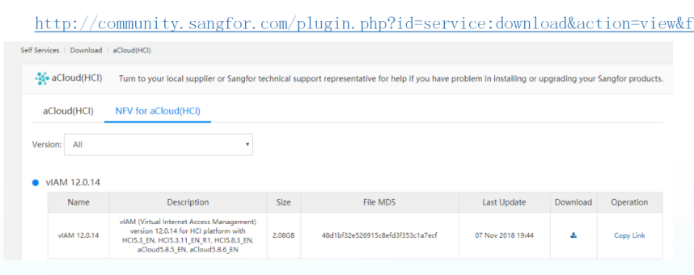
2 · Buka Templates
Pada kanvas Networking, klik tombol Templates di toolbar. Di sinilah seluruh template NFV yang sudah diunggah dikelola.
3 · Upload vma
Klik Upload, pilih file .vma, lalu tentukan datastore tujuan. Unggahan harus selesai sebelum perangkat dapat dibuat.
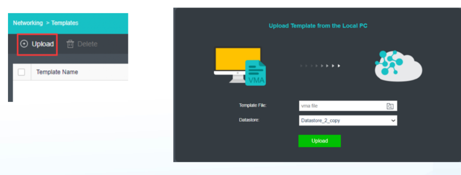
Verifikasi sebelum lanjut: cocokkan ukuran dan checksum file dengan halaman unduhan, pastikan datastore memiliki ruang untuk image + disk kerja, dan gunakan nama template yang memuat versi serta jenis perangkat. Ini mencegah tertukarnya vNGAF dan vIAM saat deployment.
Buat, lisensi, lalu akses melalui Web Console.
Slide 24–26 memperlihatkan tiga tahap yang harus berurutan: menempatkan perangkat, menerapkan lisensi dan resource, kemudian membuka konsol manajemen perangkat.
Membuat vNGAF
Tarik vNGAF dari panel NFV ke kanvas. Pada panel Settings, tentukan NIC, HA, Datastore, Run on Node, dan AF Version.
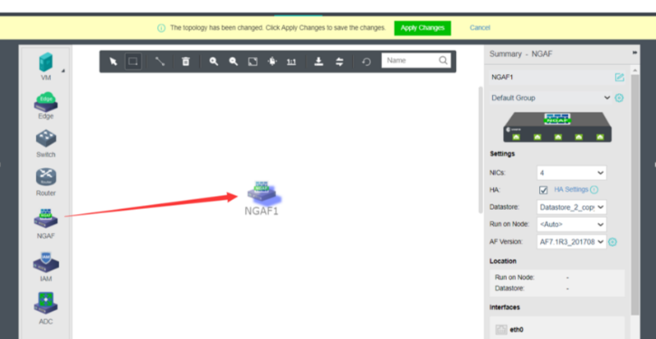
Empat NIC memberi fleksibilitas pemisahan management, untrust, trust, dan DMZ. Sesuaikan jumlah NIC dengan desain zona keamanan, bukan sekadar nilai default.
Lisensi & Resource
Buka Licensing, pilih Configuration Standard (contoh: 1 Gbps), lalu isi licensed resources: Branch VPN Sites, SSL VPN Users, Server Access, dan Mobile VPN Users.
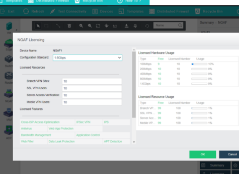
Lisensi menentukan fitur: tanpa lisensi yang tepat, throughput, jumlah user VPN, atau modul keamanan dapat dibatasi. Periksa kolom Usage setelah trafik berjalan.
Akses Web Console
Setelah perangkat menyala, klik Web Console untuk membuka antarmuka manajemen vNGAF. Di sini Anda mengonfigurasi kebijakan keamanan, interface, dan routing perangkat.
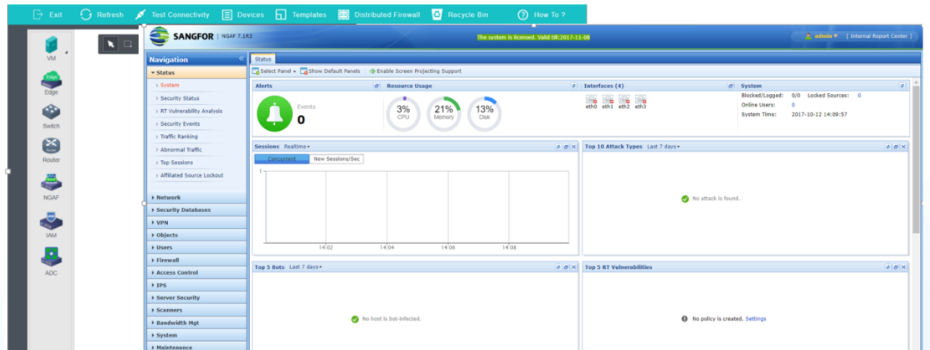
Yang perlu diperiksa: status interface, online users, policy count, dan versi signature. Dashboard yang “hijau” belum tentu kebijakan sudah benar.
| Objek | Field / nilai pada slide | Implikasi konfigurasi |
|---|---|---|
| vNGAF | NIC 4, HA dicentang, datastore Datastore_2_copy, Run on Node <Auto> | HA membutuhkan penempatan lintas host; <Auto> memudahkan, tetapi kapasitas host harus cukup. |
| AF Version | AF7.1R3_201708 (contoh) | Versi harus sesuai dengan template dan lisensi yang diunggah. |
| Configuration Standard | 1 Gbps | Menentukan plafon throughput yang diizinkan lisensi. |
| Branch VPN Sites | 10 | Jumlah situs VPN cabang yang dapat dibangun. |
| SSL VPN Users | 10 | Jumlah pengguna remote SSL VPN. |
| Server Access | 10 | Jumlah server yang dilindungi/diakses melalui fitur terkait. |
| Mobile VPN Users | 10 | Kuota pengguna VPN mobile. |
Urutan service chain menentukan siapa melihat paket lebih dulu.
Slide 27 menempatkan vNGAF di jalur antara Internet/Trunk_All dan perangkat NFV lainnya. Semua trafik VM melewati vNGAF karena topologi memaksa jalur tersebut.
Topologi Inline yang Benar
Mengapa urutan penting: jika vADC ditempatkan sebelum vNGAF, trafik yang telah didekripsi atau diseimbangkan dapat melewati firewall dalam bentuk yang tidak lagi utuh. Susun rantai sesuai kebutuhan keamanan dan dokumentasikan urutannya.
Membaca Hasil Deployment
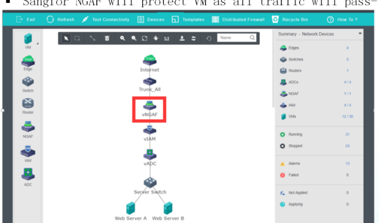
Verifikasi status perangkat
Pastikan vNGAF, vIAM, dan vADC berstatus Running, bukan Not Applied atau Applying.
Uji alur end-to-end
Dari Web Server A, ping gateway dan akses layanan melalui jalur yang melewati seluruh NFV. Gunakan Test Connectivity pada toolbar.
Cek resource host
Empat NIC dan HA berarti perangkat dapat berpindah host. Pastikan setiap host memiliki vCPU, RAM, dan datastore yang cukup.
Dokumentasikan titik kegagalan
Setiap perangkat inline adalah titik tunggal jika HA tidak aktif. Catat dependensi dan siapkan prosedur bypass.
Status panel kanan pada slide: 4 edge, 5 switch, 7 router, 4/4 ADC, 1/1 NGAF, 4/4 IAM, 31 VM running, 24 stopped, 13 alarm. Angka ini membantu memastikan objek yang dibuat benar-benar terdaftar.
Traffic Mirroring
Menyalin trafik dari satu atau banyak source port ke satu mirror port untuk audit, troubleshooting, dan analisis keamanan — tanpa mengganggu alur produksi.
Melihat trafik tanpa mengubah jalur produksi.
Slide 28–29 menjelaskan tiga skenario utama port mirroring: audit kepatuhan, operasi jaringan, dan analisis keamanan. Satu port tujuan dapat menerima salinan dari beberapa sumber.
Audit & Kepatuhan
Industri pemerintah dan keuangan memiliki kebutuhan keamanan serta kepatuhan tinggi. Trafik instans disalin secara transparan ke platform audit terpusat untuk dianalisis.
Operasi & Troubleshooting
Operator dapat memeriksa masalah jaringan, misalnya status transmisi dan analisis TCP retransmission, tanpa harus melakukan packet capture di dalam VM.
Analisis Keamanan
Inspeksi menyeluruh menggunakan perangkat keamanan internal atau pihak ketiga untuk menangkap seluruh potensi kerentanan dan ancaman intrusi.
Cara Kerja Port Mirroring
Port mirroring meneruskan data trafik dari satu atau lebih source port ke port tertentu. Port tujuan disebut mirror port atau destination port. Trafik sumber tetap berjalan normal; hanya salinannya yang dikirim ke mirror port.
Source ports
Destination
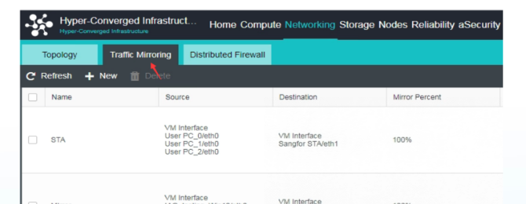
Kemampuan yang Didukung
Mirroring tidak terbatas pada satu VM. Platform mendukung beberapa pola yang harus dipilih sesuai tujuan observasi.
| Kemampuan | Detail |
|---|---|
| VM → edge/NFV/VM | Mirror interface VM yang terhubung ke virtual router/switch menuju edge, NFV, atau interface VM lain. |
| NFV → edge/NFV/VM | Mirror interface NFV yang terhubung ke virtual router/switch. |
| Edge → edge | Mirror trafik dari satu edge ke edge lain. |
| Multi-source | Banyak source port dapat diarahkan ke satu destination port. |
| Satu rule, banyak port | Konfigurasi beberapa source port dalam satu kebijakan. |
| Sampling & arah | Atur sampling rate, direction, dan VLAN untuk mirroring. |
Hitung beban: mirror 100% berarti trafik sebesar sumber ikut dialirkan ke tujuan. Jika sumber 5 Gbps dan target berada di host lain, jalur underlay dan port tujuan menanggung tambahan 5 Gbps. Gunakan sampling atau mirror percent lebih rendah bila tujuan hanya butuh sampel statistik.
Membuat kebijakan tanpa memicu loop VLAN.
Slide 32 adalah peringatan paling penting pada bab ini: ketika target mirror adalah interface edge, VLAN wajib dikonfigurasi dan harus konsisten dengan VLAN bisnis pada port switch fisik yang terhubung ke edge.
Urutan Membuat Mirror Policy
Masuk ke Networking → Traffic Mirroring, lalu klik New.
Gunakan nama yang menyebut sumber dan tujuan, misalnya MIRROR-PC-to-STA.
Pilih tipe source: VM Interface, NFV Device Interface, atau Edge-Connected Interface.
Tentukan satu destination. Untuk edge target, isi VLAN ID yang sesuai dengan port switch fisik.
Tentukan persentase salinan. Mulai dari nilai rendah untuk uji, lalu naikkan bila diperlukan.
Periksa status policy, lalu validasi paket di sisi analyzer.
Peringatan loop: jika port switch fisik yang terhubung ke edge belum diisolasi, mirrored traffic dalam VLAN yang sama dapat kembali masuk ke edge dan menyebabkan switching loop yang mengganggu layanan. Isolasi port tersebut, lalu tentukan VLAN ID secara eksplisit.
Field Kritis pada Add Traffic Mirroring Policy
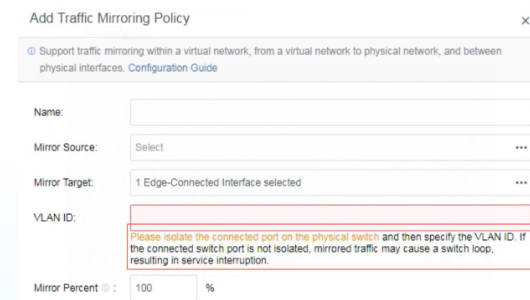
1 Edge-Connected Interface, VLAN ID wajib, Mirror Percent 100%.| Field | Nilai contoh | Catatan |
|---|---|---|
| Name | — | Wajib; gunakan pola penamaan yang konsisten. |
| Mirror Source | Select | Bisa VM interface, NFV device interface, atau edge-connected interface. |
| Mirror Target | 1 Edge-Connected Interface | Satu tujuan; banyak sumber diperbolehkan. |
| VLAN ID | Kosong pada contoh | Wajib untuk target edge; harus sama dengan VLAN bisnis di port switch fisik. |
| Mirror Percent | 100% | Turunkan bila bandwidth tujuan terbatas. |
Memilih Sumber Mirror
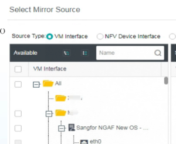
Tiga Tipe Source dan Konsekuensinya
| Tipe source | Yang terlihat | Kapan dipakai |
|---|---|---|
| VM Interface | Trafik masuk/keluar vNIC VM | Audit aplikasi, bedah koneksi VM, analisis retransmisi. |
| NFV Device Interface | Trafik pada interface perangkat NFV | Verifikasi kebijakan firewall/ADC, audit jalur service chain. |
| Edge-Connected Interface | Trafik pada titik temu fisik–virtual | Audit north-south, pemantauan uplink produksi. |
Urutan pemilihan: tentukan pertanyaan yang ingin dijawab lebih dulu (“apa yang dikirim VM?” vs “apa yang keluar ke fisik?”), baru pilih source. Memilih source yang salah menghasilkan data yang benar tetapi tidak menjawab masalah.
Network Insight
Visualisasi aliran akses selama 30 hari: siapa mengakses siapa, port apa yang terbuka, dan di mana risiko serta bottleneck berada — dengan sampling 100% tanpa kehilangan performa forwarding.
Dari data paket menjadi peta akses yang bisa dibaca.
Slide 33–34 menjelaskan Flow Visual: koleksi dan analisis aliran layanan untuk diagnosis bottleneck, penemuan fault, perencanaan kapasitas, dan pemantauan status layanan.
Nilai Analitik Aliran
- Visualisasi trafik dan relasi akses untuk membantu optimasi topologi layanan.
- Verifikasi intent firewall rules dan kepatuhan trafik akses; isolasi trafik abnormal lebih cepat.
- Identifikasi ruang dampak serangan dan isolasi domain fault secara cepat.
- Riwayat akses untuk menganalisis relasi layanan tertentu dan mempercepat troubleshooting.
- Ekspor detail akses historis ke platform analitik internal untuk analisis statistik kunjungan bisnis.
- Sampling 100% dengan performa forwarding yang praktis tidak berkurang, sehingga trafik dan relasi akses tidak terlewat.
Batas retensi: akses trafik dapat dilihat selama 30 hari. Untuk kebutuhan audit jangka panjang, ekspor data sebelum periode retensi berakhir.
Tiga Tingkat Visualisasi
Network Insight menyusun pandangan dari tingkat makro ke mikro: business area → business system → virtual machine. Dengan begitu, tim dapat berpindah dari “area mana yang berisiko?” ke “port apa yang terbuka di VM tertentu?”.
Business Area
Distribusi aset dari sudut pandang global, akses antar-area, dan penyebaran aset internet-facing serta high-risk port.
Business System
Hubungan antar-sistem (contoh: order → inventory → logistics), termasuk akses ke middleware dan database.
Virtual Machine
Port terbuka, micro-isolation policy, dan detail akses per VM — termasuk elastic IP dan IP internal.
Menampilkan port yang benar-benar terbuka pada VM, bukan hanya asumsi dari konfigurasi.
Memvisualisasikan apakah isolasi mikro antar-VM benar-benar diterapkan.
Catatan akses yang dapat diekspor untuk analisis dan audit.
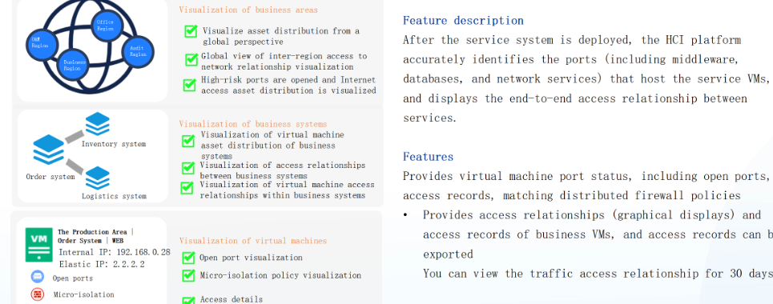
Cara membaca fitur: Network Insight menjawab “apa yang terjadi”, bukan “apa yang seharusnya terjadi”. Bandingkan temuan port terbuka dan relasi akses dengan desain kebijakan. Selisih antara keduanya adalah utang keamanan yang harus diselesaikan.
Men-deploy virtual machine Network Insight (aNI).
Slide 35–37 mencakup langkah deployment, ukuran VM aNI, dan antarmuka analitik. Network Insight berjalan sebagai VM khusus yang diimpor dari file vma.
Enam Langkah Deployment
Networking → Network Insight, lalu klik Configuration Guidelines dan ikuti panduan.
Masuk ke halaman import VM, pilih file .vma aNI, lalu tentukan VM group, storage location, storage policy, dan running location.
Aktifkan Enable, hubungkan ke network, pilih Use IPv4 Address, dan isi IP aNI pada management network (disarankan satu segmen dengan manajemen HCI).
Nyalakan partner service port dan service terkait; tanpa ini, layanan Network Insight tidak dapat diakses.
Masuk ke console VM, konfigurasikan autentikasi platform. Network Insight mendukung integrasi HCI atau SCP.
Pastikan status “Last Updated” berubah dan flow mulai terkumpul. Perubahan platform integrasi memerlukan redeploy.
Redeploy, bukan sekadar ubah setting: mengganti platform integrasi (HCI ↔ SCP) memerlukan deployment ulang. Rencanakan hal ini sebelum produksi agar tidak kehilangan data historis.
Memilih Ukuran VM aNI
Kapasitas aNI ditentukan oleh jumlah virtual machine yang akan dianalisis. Pilih ukuran dengan headroom, karena pertumbuhan beban tidak selalu linear.
| Profil | Core | RAM | Storage | Total VM |
|---|---|---|---|---|
| Small | 8 | 16 GB | 500 GB | 100 |
| Medium | 32 | 64 GB | 1 TB | 1.000 |
| Large | 64 | 128 GB | 1,5 TB | 3.000 |
Catatan kapasitas: angka “total VM” adalah batas profil, bukan target utilisasi. Faktor lain seperti jumlah flow per detik, jumlah port terbuka, dan retensi 30 hari tetap memengaruhi kebutuhan storage.
Jalur Menu yang Benar
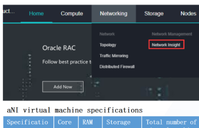
Membaca Peta Aliran
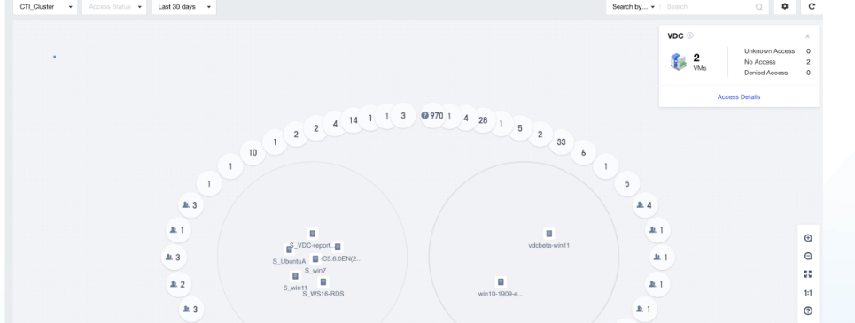
CTI_Cluster, Access Status, Last 30 days; panel VDC menunjukkan 2 VM dan status akses.Siapa mengerjakan apa di setiap lapisan jaringan.
Gunakan matriks ini untuk menentukan komponen yang tepat saat merancang alur. Banyak masalah desain muncul karena fungsi L2, L3, dan keamanan diasumsikan dapat dilakukan oleh komponen yang sama.
| Kemampuan | Physical Edge | Distributed vSwitch | Virtual Router | NFV (vNGAF/vADC) | Network Insight (aNI) |
|---|---|---|---|---|---|
| Layer 2 forwarding | Bridge ke fisik | Utama | — | Pass-through | Observasi |
| Layer 3 routing | — | — | Utama | Routing perangkat | — |
| VLAN trunk | Port Group + PVID | Segmen L2 | VLAN sub-interface | Interface VLAN | — |
| Overlay VXLAN | — | Ya | — | Transparan | — |
| ACL / filtering | — | ACL IP & port | Advanced ACL | Firewall / WAF | Verifikasi intent |
| NAT | — | — | SNAT / DNAT | SNAT / DNAT | Melihat aliran |
| Load balancing | — | — | — | vADC | — |
| High Availability | NIC di semua node | Terdistribusi | HA tersedia | Opsi HA | VM HA |
| Batas / kapasitas | Per NIC fisik | 1024 port | Instance-based | Lisensi throughput | 100 / 1.000 / 3.000 VM |
| Lisensi | aNET | aNET | aNET | NFV | Network Insight |
Baca baris “High Availability”: HA pada vSwitch bersifat arsitektural (terdistribusi), sedangkan HA pada vRouter dan NFV adalah fitur instance yang harus diaktifkan dan ditempatkan dengan benar. Keduanya tidak otomatis setara.
Segmentasi
Gunakan vSwitch untuk memisahkan web, app, database, dan manajemen. Terapkan ACL hanya pada segmen yang membutuhkan kontrol east-west.
Routing
Gunakan vRouter ketika trafik harus melintasi subnet, keluar ke internet, atau membutuhkan NAT. Ingat: vRouter tidak terdistribusi.
Kontrol & Observasi
NFV menangani keamanan dan load balancing; mirroring serta aNI memberi bukti dan visibilitas tanpa mengubah jalur produksi.
Enam gejala lapangan dan akar masalahnya.
Urutan diagnosis mengikuti lapisan: cek edge dan VLAN lebih dulu, baru vSwitch, routing, lalu NFV dan observabilitas. Jangan mulai dari asumsi “VM rusak”.
VM hidup, tidak bisa keluar
VM dapat diakses dari VM lain di host yang sama, tetapi tidak dapat ping gateway fisik atau internet.
L2 antar-node gagal
Dua VM di switch yang sama dapat berkomunikasi jika berada di host yang sama, tetapi gagal saat berbeda host.
Switch tidak bisa menambah port
Penambahan VM gagal atau topologi berstatus Not Applied setelah perubahan.
Apply Changes, dan konflik karena administrator lain sedang mengedit topologi.Routing / NAT tidak bekerja
VM dapat mencapai gateway vRouter, tetapi tidak dapat mencapai subnet lain atau internet.
Mirror tidak menerima paket / loop
Analyzer tidak melihat trafik, atau jaringan justru mengalami loop dan gangguan setelah policy dibuat.
Network Insight kosong
VM aNI berjalan, tetapi tidak ada flow atau “Last Updated” tidak berubah.
Urutan diagnosis yang disarankan: (1) apakah VM berada di node dengan edge aktif? (2) apakah VLAN/PVID konsisten? (3) apakah L2 antar-node bekerja? (4) apakah routing/NAT benar? (5) apakah NFV inline meneruskan atau memblokir? (6) apakah mirror/insight hanya gagal mengamati? Pisahkan “trafik gagal” dari “alat observasi gagal”.
Lima jebakan paling berisiko di lapangan.
Kesalahan berikut tidak selalu terlihat saat deployment. Dampaknya baru muncul ketika VM dimigrasikan, VLAN baru ditambahkan, atau trafik produksi meningkat.
Edge hanya di satu node
Physical Edge tidak menyertakan NIC pada setiap node. VM berjalan normal sampai dijadwalkan ke node tanpa uplink, lalu kehilangan konektivitas.
DETEKSI: uji ping dari VM di tiap node
Trunk_All tanpa disiplin
Semua VLAN dibiarkan lewat, PVID salah, atau port group tidak sesuai switch fisik. Risiko kebocoran segmen dan broadcast yang tidak perlu.
DETEKSI: audit VLAN ID & PVID per edge
Mirror ke edge memicu loop
Mirror target edge diberi VLAN yang sama dengan port switch yang belum diisolasi. Salinan trafik kembali masuk dan menyebabkan loop.
DETEKSI: isolasi port & cek VLAN target
NFV undersized
vCPU/RAM/NIC NFV terlalu kecil, sementara resource hanya dapat dinaikkan. Throughput dan jumlah koneksi menjadi plafon yang sulit diturunkan kembali.
DETEKSI: bandingkan lisensi & usage
Menganggap vRouter distributed
vRouter adalah instance dengan HA, bukan bentuk terdistribusi. Menempatkannya sebagai jalur utama semua east-west menciptakan jalur memutar dan titik kegagalan.
DETEKSI: telusuri jalur VM→VM
Aturan pencegahan: setiap perubahan topologi harus melalui empat pemeriksaan — edge di semua node, VLAN/PVID, kapasitas port/uplink, dan dampak mirror. Dokumentasikan hasilnya sebelum Apply Changes.
Enam rangkuman utama modul Virtual Network & NFV.
Jika hanya enam hal yang diingat dari Part 6, ambil prinsip berikut. Semuanya berasal langsung dari slide 3–37.
Virtual network adalah peta logis di atas fabric fisik. Semua jalur akhirnya melewati NIC dan switch fisik; Physical Edge adalah satu-satunya jembatan.
Edge wajib mencakup interface di setiap node. Tanpa itu, VM dapat kehilangan konektivitas setelah migrasi atau penempatan otomatis.
vSwitch menyediakan L2 terdistribusi dengan batas 1024 port. Gunakan VXLAN untuk lintas host, ACL untuk kontrol, dan storm prevention untuk stabilitas.
vRouter menyediakan L3, NAT, dan ACL, tetapi tidak terdistribusi. Rancang penempatan dan HA-nya; jangan jadikan jalur default untuk semua trafik east-west.
NFV memberi kontrol keamanan inline. Ukuran resource hanya dapat dinaikkan, lisensi menentukan fitur, dan urutan service chain menentukan paket apa yang dilihat perangkat.
Mirroring dan Network Insight adalah alat bukti, bukan pengubah jalur. Mirroring memerlukan VLAN yang konsisten pada target edge; aNI membutuhkan partner service, IP manajemen yang benar, dan sizing sesuai jumlah VM.
Kaidah operasional: jaringan virtual yang baik terlihat sederhana di kanvas, tetapi konsisten di setiap lapisan: NIC edge, VLAN, port, route, lisensi, dan kebijakan. Sederhanakan topologi, beri nama objek dengan disiplin, dan uji dari setiap node — bukan hanya dari node tempat Anda login.
Parameter lapangan Virtual Network & NFV.
Ringkasan nilai dan aturan yang paling sering dibutuhkan saat membangun, mengubah, atau mendiagnosis topologi jaringan virtual Sangfor HCI.
Trunk_AllApply Changes.Urutan Cepat Membangun Virtual Network
Pastikan aNET/NFV aktif dan belum kedaluwarsa
Pilih NIC uplink di setiap node; buat port group
Buat segmen L2, hubungkan VM, aktifkan proteksi
Interface, route, NAT, ACL, lalu uji lintas subnet
Upload vma → drag perangkat → lisensi → Web Console
Pilih source, target, VLAN; mulai dari percent rendah
Deploy aNI, konfigurasi IP manajemen, aktifkan service
Gunakan sebagai checklist perubahan: setiap baris pada tabel di atas adalah titik yang perlu diverifikasi sebelum dan sesudah perubahan topologi produksi.
Istilah teknis virtual network & NFV.
Ketik pada kotak pencarian untuk memfilter definisi. Pencarian mencakup nama istilah dan isi penjelasan.
Network virtualization Sangfor HCI yang menyusun topologi dari VM dan perangkat jaringan virtual, lalu menjembatani trafik ke port fisik melalui Physical Edge.
Penyebaran topologi jaringan menggunakan virtual machine dan virtual network device di platform HCI, kemudian di-bridge ke port jaringan fisik untuk membentuk LAN.
Komponen jembatan antara physical network dan virtual network. Setiap edge wajib menyertakan network interface pada setiap physical node.
Mode default edge yang meneruskan seluruh VLAN. Fleksibel, tetapi kurang ketat dibanding port group yang dibatasi VLAN tertentu.
Objek pada edge yang menentukan VLAN mana yang boleh lewat. Memiliki Name, Type, VLAN ID, dan PVID.
Port VLAN ID untuk trafik untagged yang masuk ke port. Berbeda dari VLAN ID yang menentukan VLAN yang diizinkan pada trunk.
Identifier segmen VLAN, rentang 1–4094. Harus konsisten antara port group edge dan port switch fisik.
Virtual switch logis yang melayani VM di banyak host. Trafik antar-host diteruskan melalui overlay, bukan kabel antar-VM.
Protokol overlay yang mengenkapsulasi frame L2 ke dalam paket UDP. Digunakan untuk menghubungkan distributed switch lintas node.
VXLAN Tunnel Endpoint: titik tempat enkapsulasi dan dekapsulasi VXLAN dilakukan, umumnya pada host hypervisor.
Jaringan virtual yang dibangun di atas underlay fisik. Memberi fleksibilitas topologi tanpa mengubah routing fisik secara langsung.
Jaringan fisik di bawah overlay: NIC, switch, routing, dan MTU yang harus sehat agar VXLAN dapat bekerja.
Instance routing Layer 3 untuk forwarding antar-subnet, VLAN sub-interface, SNAT/DNAT, DHCP, DNS proxy, dan ACL. Tidak terdistribusi, tetapi mendukung HA.
Interface logis di bawah satu interface induk yang melayani VLAN tertentu, memungkinkan satu jalur membawa banyak segmen.
Source NAT: mengubah alamat sumber saat trafik keluar, umumnya untuk akses internet dari alamat privat.
Destination NAT: mengubah alamat tujuan untuk mempublikasikan layanan internal melalui alamat/port tertentu.
Access Control List. Pada vSwitch berbasis IP dan port; pada vRouter dapat mempertimbangkan interface, IP, dan tipe service.
Mekanisme pada virtual switch untuk membatasi banjir broadcast yang dapat menghabiskan bandwidth dan CPU.
Network Functions Virtualization: menjalankan fungsi jaringan dan keamanan sebagai perangkat virtual di dalam topologi.
Virtual Next-Generation Application Firewall Sangfor: WAF, perlindungan kerentanan, real-time scanner, dan analisis visualisasi.
Virtual Internet Access Management: manajemen bandwidth, URL filtering, application control, autentikasi user, dan pelaporan trafik internet.
Virtual Application Delivery Controller: server load balancing, link load balancing, SSL offloading, dan optimasi aplikasi.
Virtual WAN Optimization Controller: akselerasi aplikasi, reduksi flow, acceleration VPN, dan optimasi disaster recovery.
Urutan perangkat NFV yang dilalui trafik, misalnya Edge → vNGAF → vIAM → vADC → Server Switch. Urutan menentukan kebijakan dan visibilitas paket.
Menyalin trafik dari source port ke mirror/destination port untuk audit, troubleshooting, atau analisis keamanan tanpa mengubah jalur produksi.
Persentase trafik sumber yang disalin ke destination. Nilai 100% berarti seluruh trafik; nilai lebih rendah mengurangi beban tujuan.
Fitur flow analytics yang memvisualisasikan relasi akses, port terbuka, dan status isolasi; mendukung riwayat 30 hari dan ekspor data.
Virtual machine Network Insight yang di-deploy dari file vma. Tersedia profil Small, Medium, dan Large sesuai jumlah VM yang dianalisis.
Kebijakan isolasi granular antar-VM yang memungkinkan hanya alur akses tertentu yang diizinkan, divalidasi melalui Network Insight.
Maximum Transmission Unit. Pada underlay VXLAN, MTU yang lebih besar (umumnya 1600 byte) diperlukan untuk menampung overhead enkapsulasi.
Tidak ada istilah yang cocok. Coba kata kunci lain.
Uji pemahaman: 5 pertanyaan esensial Part 6.
Mencakup edge, batas vSwitch, port group, mirroring, dan karakteristik NFV/vRouter.
Mengapa setiap Physical Edge wajib menyertakan network interface pada setiap physical node dalam cluster?
Berapa jumlah port maksimum yang dapat didukung oleh satu virtual switch Sangfor HCI?
Anda perlu membuat port group yang membawa beberapa VLAN pada satu uplink edge. Konfigurasi manakah yang tepat?
Apa risiko utama ketika Mirror Target diarahkan ke interface edge, tetapi VLAN tidak dikonfigurasi atau tidak konsisten dengan port switch fisik?
Pernyataan manakah yang benar tentang virtual router dan perangkat NFV Sangfor?
Hasil penilaian pemahaman virtual network dan NFV Anda telah dihitung. Anda dapat mengulangi kuis untuk memperkuat pemahaman teknis.
Pertanyaan lapangan seputar virtual network & NFV.
Jawaban atas skenario yang paling sering muncul saat implementasi, migrasi, dan operasi harian.
Mengapa VM tidak bisa ping gateway padahal vNIC terlihat terhubung?
Apakah Trunk_All boleh dipakai di produksi?
Trunk_All meneruskan semua VLAN sehingga memperbesar risiko kebocoran segmen dan broadcast yang tidak perlu. Praktik yang lebih aman adalah membuat port group dengan VLAN ID spesifik sesuai kebutuhan bisnis, lalu mendokumentasikan pemetaannya.Apa perbedaan VLAN ID dan PVID pada port group?
Mengapa dua VM di switch yang sama tidak bisa berkomunikasi saat berbeda host?
Kapan saya harus memakai virtual router, dan kapan cukup vSwitch?
Mengapa resource NFV tidak bisa dikurangi setelah dibuat?
Apakah urutan vNGAF, vIAM, dan vADC dalam service chain berpengaruh?
Mengapa mirroring ke edge bisa menyebabkan loop?
Berapa ukuran VM aNI yang sebaiknya dipilih?
Mengapa Network Insight tidak menampilkan data setelah VM aNI berjalan?
Checklist Kesiapan Administrator Jaringan Virtual
Verifikasi kesiapan teknis sebelum mengubah topologi virtual network di lingkungan produksi. Progres tersimpan otomatis di browser.
Jaringan virtual terbangun. Trafik terlihat dan terkendali.
Anda telah menuntaskan seluruh materi Part 6: konsep aNet, Physical Edge dan port group, distributed virtual switch dengan VXLAN, virtual router, perangkat NFV beserta lisensinya, Traffic Mirroring yang aman, serta Network Insight untuk audit dan troubleshooting. Topologi virtual Anda kini bukan hanya terhubung, tetapi juga dapat dibuktikan dan dianalisis.